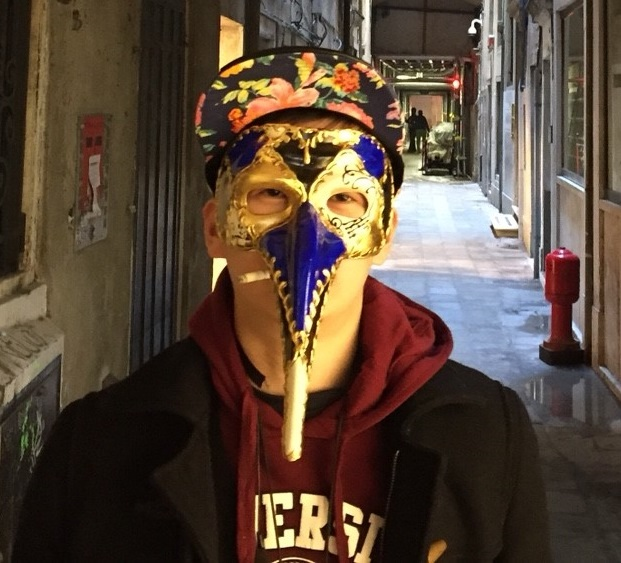
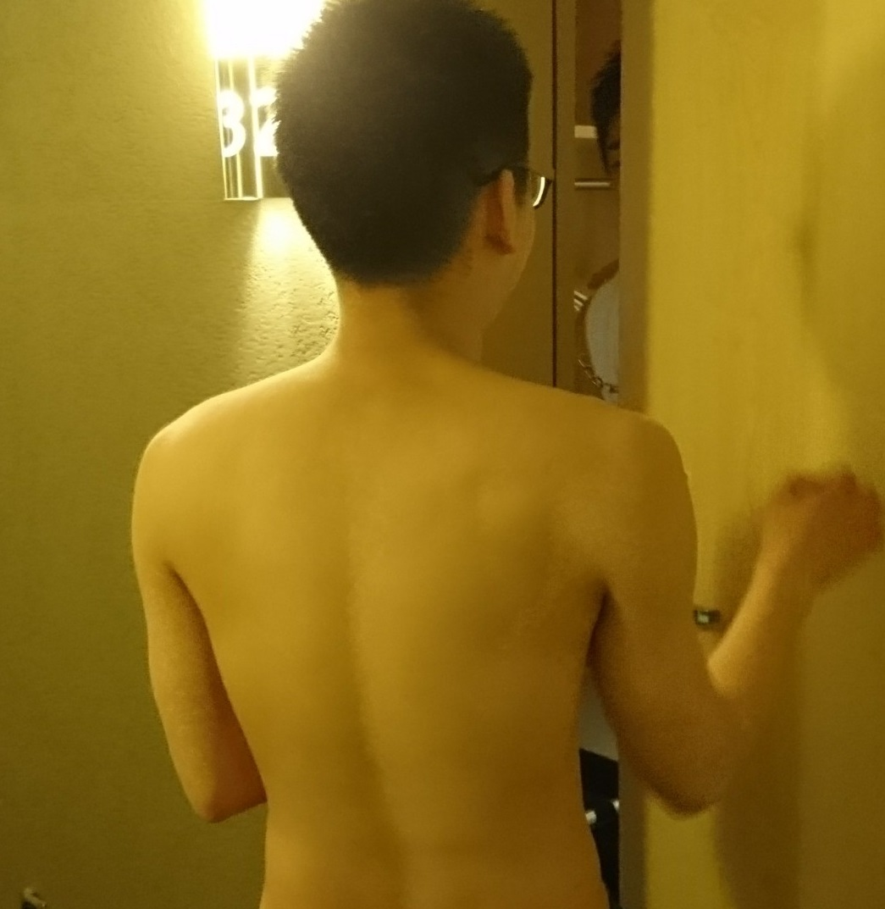
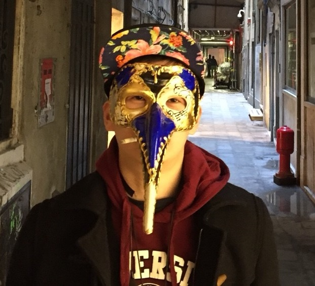
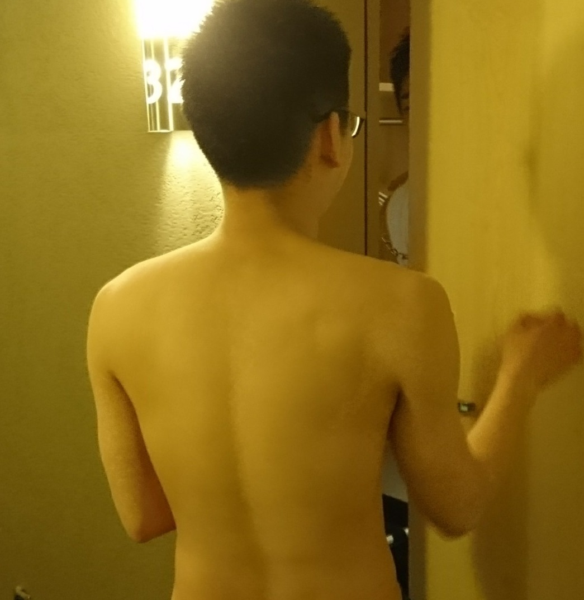
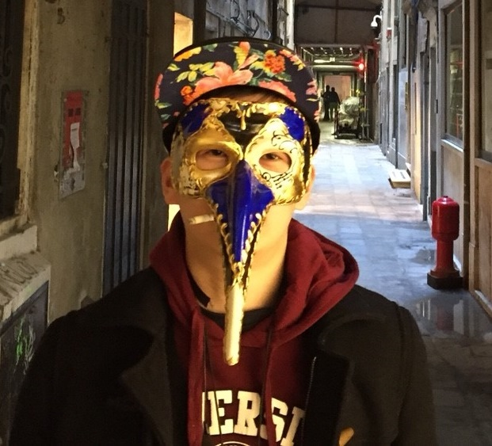
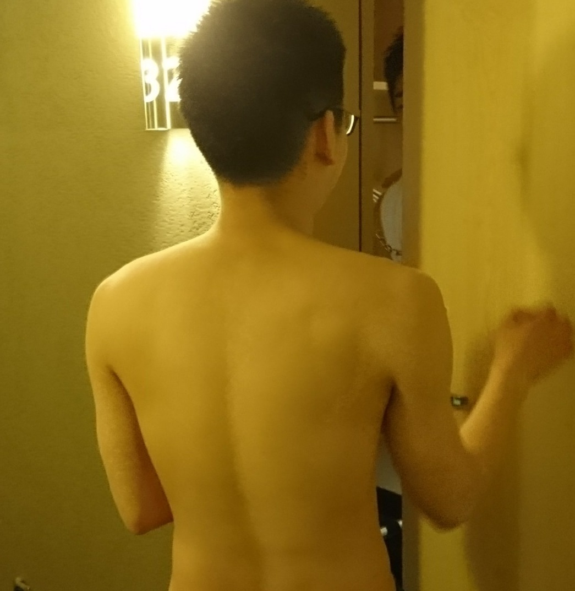

記事一覧

私が音楽教室で教わった、音域があがるボイストレーニングのやり方（ミックスボイス編）
音楽・美術
管理人のプロフィール
 



名前：肥大したプライド
紹介：天性のガイジっぷりから不遇の学生生活を過ごし、一念発起して公務員試験勉強を始め、はれて新卒で公務員になるも天性のガイジっぷりから不遇の社会人生活を過ごしている。重度の中二病であり、ADHD診断で毎回病院を勧められるガイジである。


音楽・美術


紹介：天性のガイジっぷりから不遇の学生生活を過ごし、一念発起して公務員試験勉強を始め、はれて新卒で公務員になるも天性のガイジっぷりから不遇の社会人生活を過ごしている。重度の中二病であり、ADHD診断で毎回病院を勧められるガイジである。